Once unzipped the jCAE installation look like this:

To start jCAE on Microsoft Windows double click on the jcae.bat
file in the root directory of jCAE. On Linux run the jcae.sh
script. You get the following screen:
One has to start a new jCAE project, through the File|New menu. You get a wizard project in which you have to mention the project name and the storage location as presented in the next figures.
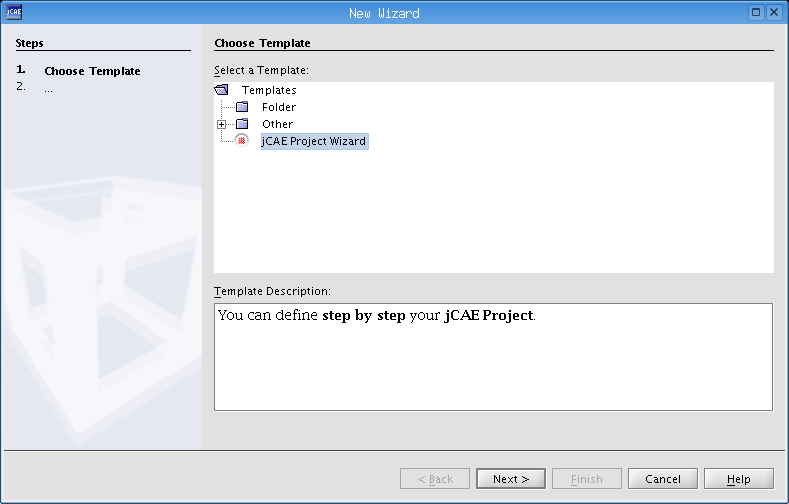Select the name and the location of the project:
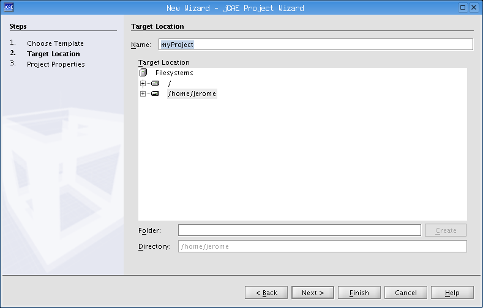Then click on the finish button. The basic structure of a project is generated in the upper leftmost tree. A project is composed of two basic modules: the CAD module and the meshing module.
First, one has to import a CAD file in the CAD module by selecting the Import geometry in the file menu. 3 types of CAD format are supported: the native OpenCascade format (Brep) and the standard IGES and STEP formats. Select a CAD file:
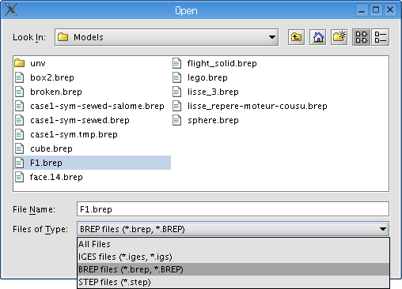A new CAD object is created ; this terminates the CAD operations. The final geometry step is presented in Figure 7. A default mesh object is defined in the mesh module. This mesh object has three default meshing hypothesis. Hypothesis can be of two kinds: algorithms and parameters. The three default hypothesis are the following:
To display the geometry, right click on it and click View.
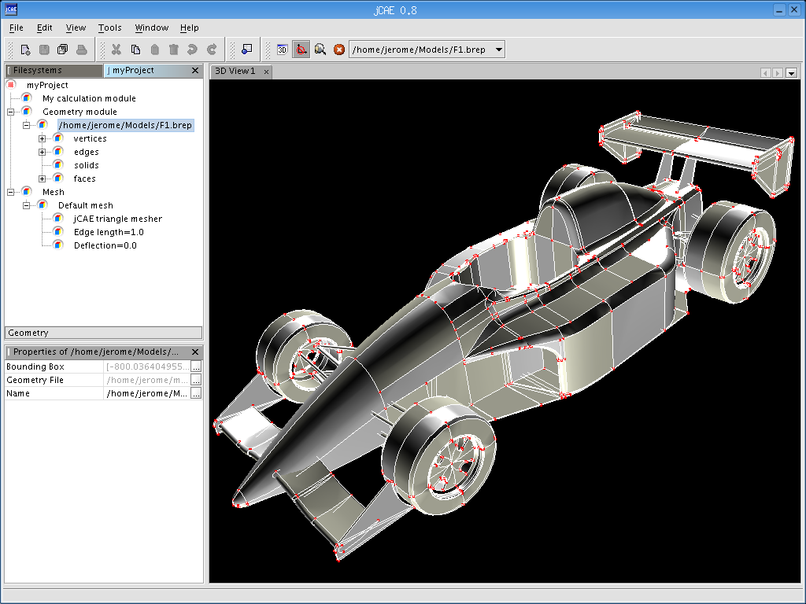At this point, the default mesh object has no associated geometry. One need to link the previously loaded geometry to the mesh object. Currently, this is done through the copy/paste operation presented hereafter.
| 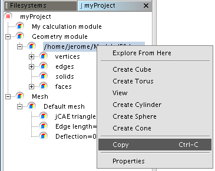 | 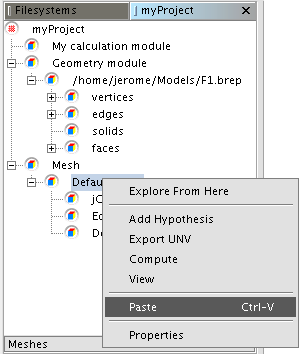 |
Then you may modify the parameters (edge length and deflexion) through the lower leftmost properties panel as shown below.
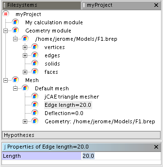Once the parameter values are set, you can compute the mesh through the pop-up menu as shown below.
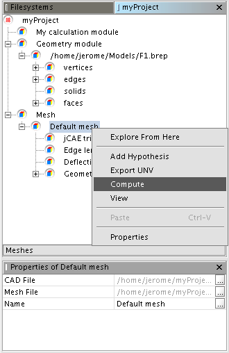One can follow the mesh generation phase by expanding the standard output window located at the bottom of the workspace (Output - jCAE Mesher 1)
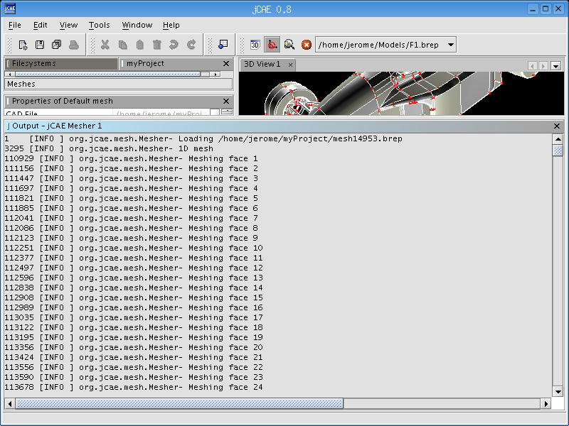Once the mesh is generated, the view operation (pop-up menu) can be selected to get the 3D representation of the mesh.
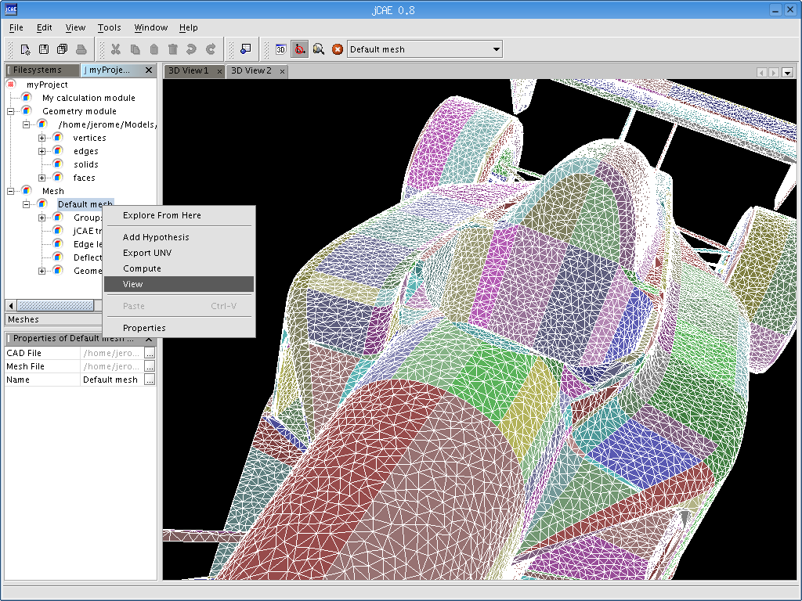Creation of a new geometry.

Pop-up menu for basic object creation.
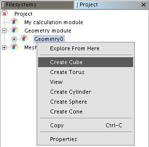Cube properties panel.
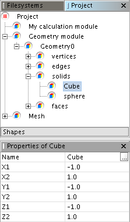Sphere properties panel
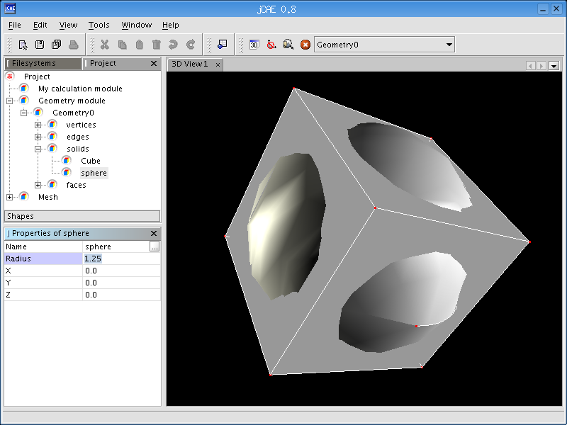Select a Boolean operation on the cube
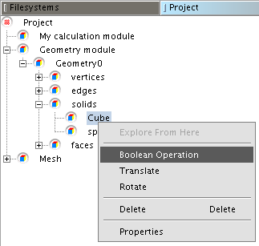Configuration of the Boolean operation
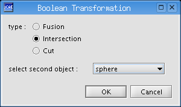Delete the sphere and the cube so only the intersection remains.
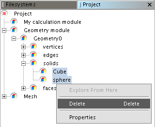 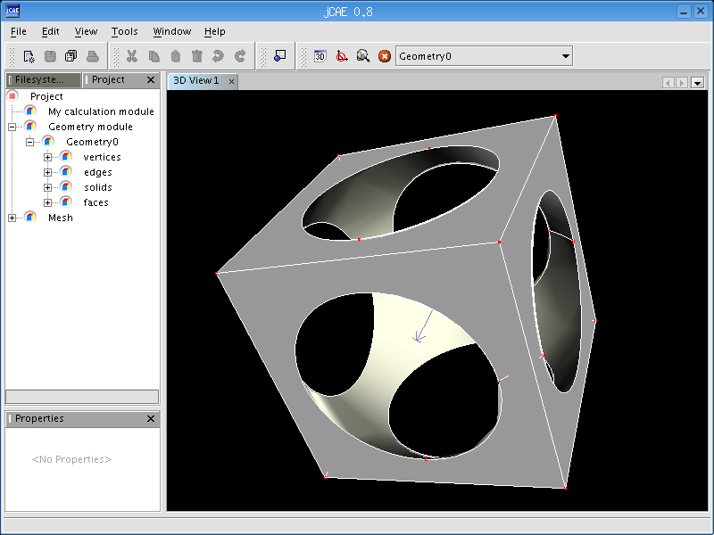Copy/Paste of the geometry to the mesh object and edit the lenght of expected edges.
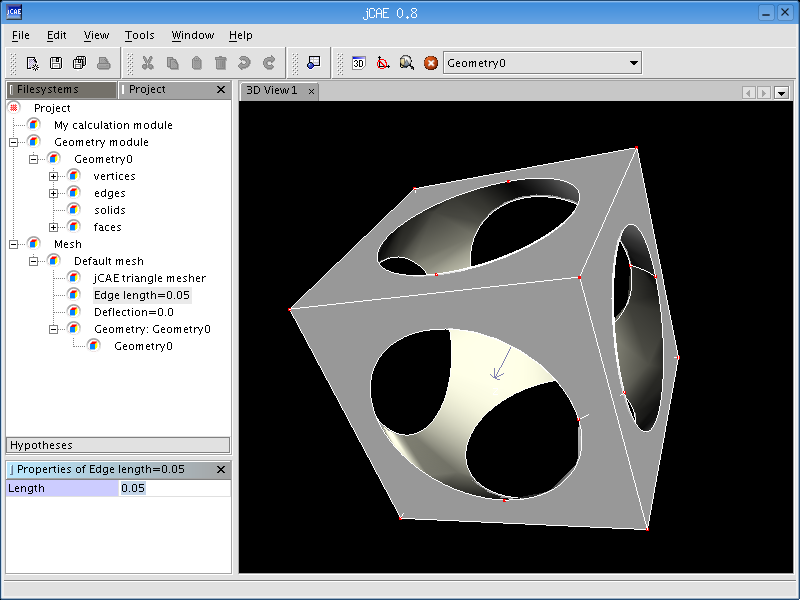Run the mesh computation.
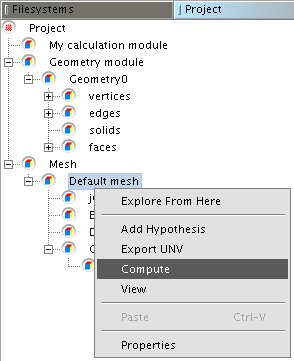Final 3D view of the mesh.
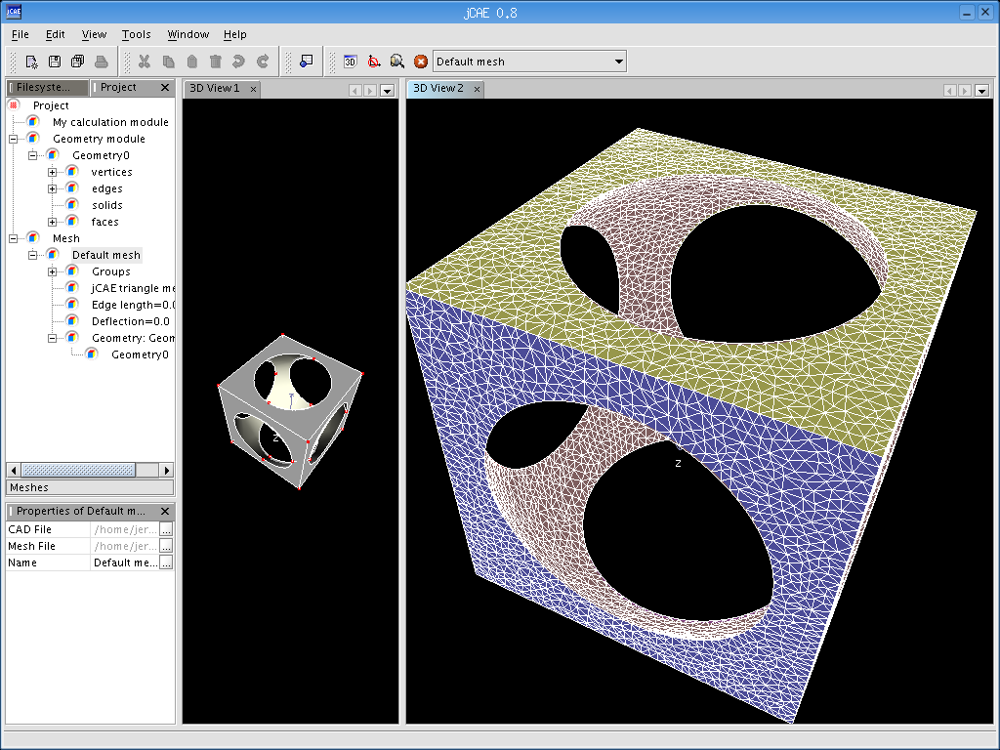A user kindly reported problems with his configuration due to memory limitations, and explained (in French) how to fix it. The mesher is launched into a separate JVM, and default maximum memory is set to 1500MB. The reason is that jCAE is primarily designed to work with very large meshes for finite element applications, and it is quite logical to have lots of RAM. We checked on Linux systems that computers with less RAM (1GB) are not affected by these settings, but it seems that Windows refuses to launch a JVM in these conditions. If you see messages like
Error occurred during initialization of VM Could not reserve enough space for object heap Could not create the Java virtual machine.
on your console, you need to modify maximumMemory property in Window/Options/Mesher settings tab.